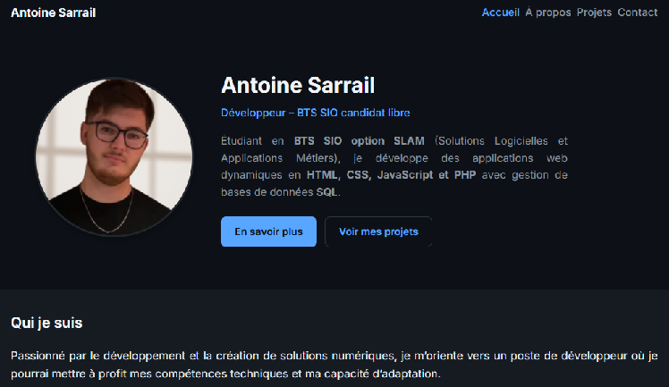
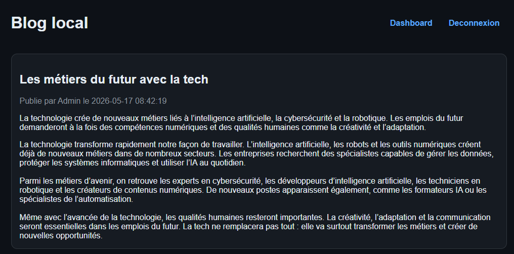
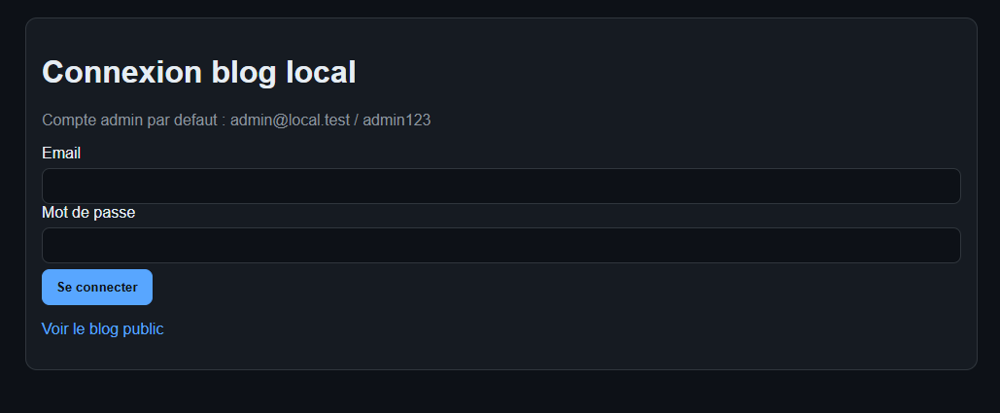
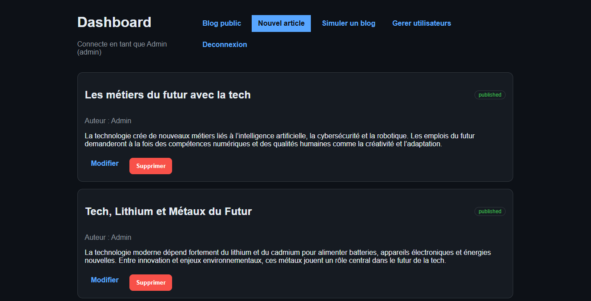
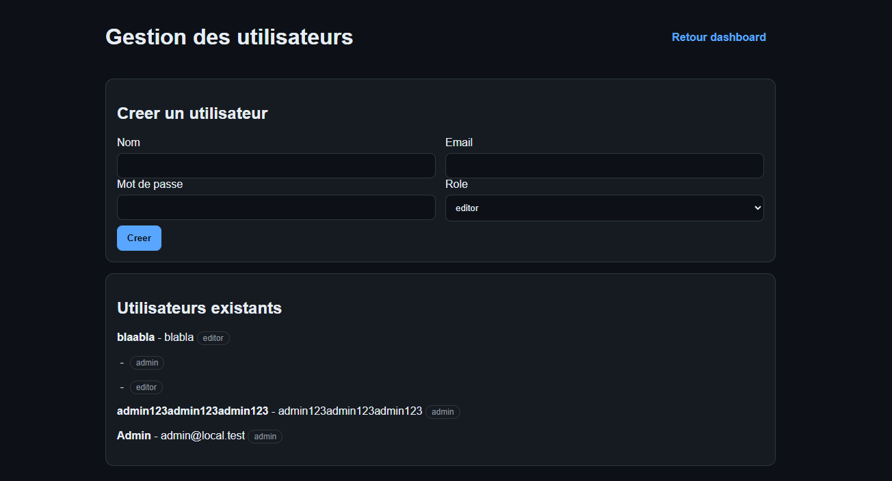
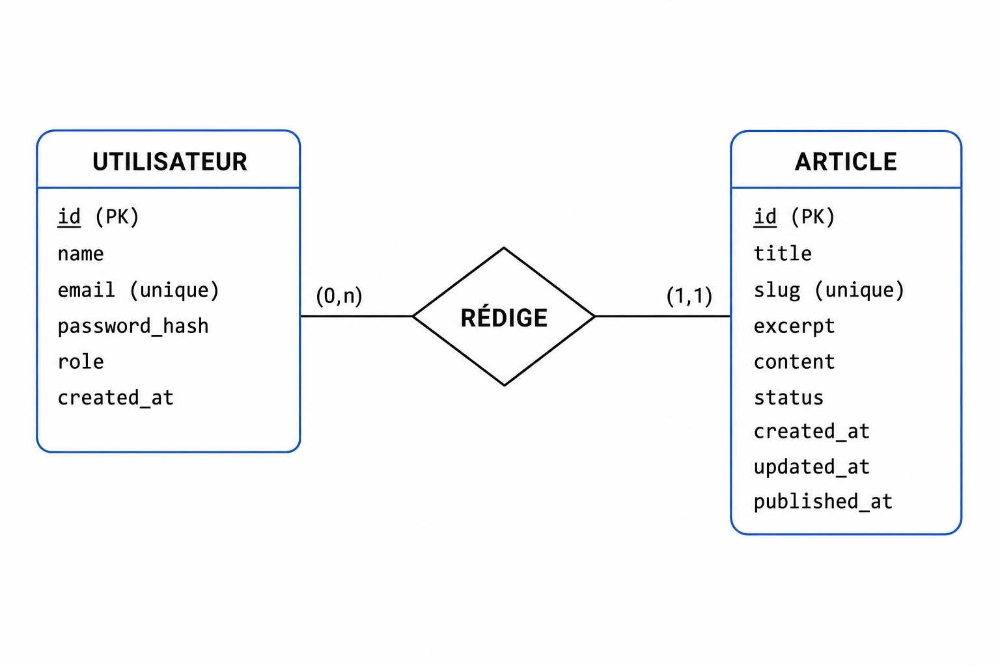

BTS SIO SLAM · Portfolio personnel
Ce portfolio
Développement d’un site web portfolio personnel développeur : GitHub Pages, SEO basique, versioning et présentation des compétences BTS SIO SLAM.
01 — Contexte
Professionnaliser mon image en ligne
Ce portfolio est né d’un besoin simple : montrer mes projets et mes créations de façon plus professionnelle, pour refléter qui je suis et ce que je fais.
J’ai commencé par une base claire avec ma présentation, mes projets et ma page contact, puis j’ai hébergé le site sur GitHub Pages avec un versioning régulier sur GitHub.
GitHub Pages ↔ VPS :8088

03 — Stack
Ce que le projet démontre
- GitHub Pages Hébergement du portfolio public
- SEO basique Structure de pages et visibilité web de base
- Organisation des versions Versioning continu via GitHub
- BTS SIO SLAM Présentation de mes compétences et réalisations
04 — Évolution
Du portfolio statique au back-office
Plus tard, j’ai voulu publier des articles. J’ai donc ajouté une base de données et construit un backend en architecture MVC pour gérer les utilisateurs et les publications.
Cette partie est hébergée sur un VPS dans un conteneur Docker, avec l’image Caddy/FrankenPHP. Le projet combine ainsi une vitrine publique simple sur GitHub Pages et un espace d’administration dédié pour la gestion du contenu.
Blog public
Articles en lecture
Le blog expose les publications côté visiteur — interface claire, liste des contenus éditoriaux.


06 — Back-office
Back-office live
Authentification PHP, gestion des comptes et des publications avec plusieurs rôles (par exemple editor et admin).
Pilotage
Tableau de bord
Statistiques et vue d’ensemble pour suivre l’activité du blog depuis l’administration.

Administration
Gestion des utilisateurs
Interface dédiée aux comptes : rôles (notamment editor et admin), accès et maintenance des profils.


Modèle conceptuel de données
MCD Base de données du blog
04 — Modèle de données
MLD du blog
Modèle logique de données — une ligne par table, sans coupure :
clé primaire #, clé étrangère →.
MLD — blog (SQLite)
users(#id, name, email, password_hash, role, created_at)posts(#id, title, slug, excerpt, content, status, #author_id→users, created_at, updated_at, published_at)
# clé primaire
→ clé étrangère
relation users 1,n — posts 0,1
05 — Déploiement
FrankenPHP · Docker
Conteneur sarrailantoine-app — FrankenPHP 8.2, SQLite, volume
/home/luna/sarrailantoine/backend, port 8088:80.
docker-compose.yml — extrait
sarrailantoine-app:
image: dunglas/frankenphp:php8.2
container_name: sarrailantoine-app
restart: always
networks:
- backend
environment:
SERVER_NAME: :80
DB_DRIVER: sqlite
volumes:
- /home/luna/sarrailantoine/backend:/app
ports:
- "8088:80"docker ps — VPS
445f7d745535 dunglas/frankenphp:php8.2 2 weeks ago Up 6 hours (healthy) 0.0.0.0:8088->80/tcp sarrailantoine-app